Record · 2026. 11. 6.
생태관광으로 말하는 제주 자연과 인간의 미래
2026 제주국제생태포럼 「제주 전문가 네트워크」 — 고제량 (사)제주생태관광협회 협회장 발표
제주돌문화공원 설문대할망전시관에서 처음 열린 제주국제생태포럼 둘째 날, 제주에서 활동하는 비영리단체 대표들이 제주의 자연과 개발의 과거와 미래를 이야기했습니다. 고제량 협회장은 주민이 주체가 되어 자연을 지키며 지역을 살리는 생태관광을 제주의 길로 제시하고, 생태관광을 방문객 수와 매출이 아닌 지켜진 자연과 단단해진 마을로 평가하자고 제안했습니다.
개요
| 행사 | 2026 제주국제생태포럼 (제1회) — 주제 「자연의 서사와 사회의 재구성」 |
|---|---|
| 기간 | 2026년 11월 5일(목) ~ 7일(토), 제주돌문화공원 일원 |
| 주최 | 제주특별자치도 · 공동 주관 재단법인 지구와사람, 제주국제컨벤션센터 |
| 세션 | 제주 전문가 네트워크 「생태전환 시대, 제주 비영리섹터를 통해 보는 제주의 과거와 미래」 |
| 일시 | 2026년 11월 6일(금) 17:00 ~ 18:00 |
| 장소 | 제주돌문화공원 설문대할망전시관 큰바위쉼팡 |
| 발표 | 「생태관광을 통해 제주 자연과 인간의 미래를 말하다」 — 고제량 (사)제주생태관광협회 협회장 |
제주국제생태포럼은 자연의 권리와 생태법인, 섬 지역 생물다양성 보전, 기후와 생태의 연계, 국제협력을 다루며 국내외 정부·학계·기업·시민사회 관계자가 함께한 포럼입니다. 둘째 날 마지막 세션인 「제주 전문가 네트워크」는 제주에서 활동하는 비영리단체의 경험으로 제주 자연과 개발의 과거와 현재를 짚고, 생태전환 시대에 제주가 나아갈 방향을 찾는 자리였습니다. 센터에서도 함께 참석해 기록했습니다.
세션 발표
좌장 김명선 (사)제주자연의벗 공동대표의 진행으로 네 사람이 차례로 발표하고, 이어 발표자 토론과 참석자 소감이 이어졌습니다.
- 발표 1제주의 지속가능한 공존을 위한 과제와 전망
이영웅 제주환경운동연합 사무처장
- 발표 2마을과 밀착한 풀뿌리 중심의 해양 생태보전운동을 말하다
양수남 (사)제주자연의벗 사무처장
- 발표 3업사이클링 캠페인을 통해 제주 바다의 문제를 말하다
안성관 다시바다 대표
- 발표 4생태관광을 통해 제주 자연과 인간의 미래를 말하다
고제량 (사)제주생태관광협회 협회장
고제량 협회장이 한 이야기
주어진 10분 동안 고제량 협회장은 생태관광을 찾게 된 출발점에서 시작해 정책의 변화, 주민이 주체가 되는 관광, 제주의 생태관광지역과 센터의 역할을 짚고 마을 사례로 마무리했습니다. 이어진 토론에서는 생태관광을 평가하는 기준을 바꾸자고 제안했습니다. 주제를 누르면 자세한 내용이 열립니다.
“생태관광을 통해서 사실은 증명하고 싶었던 것이 저희 20대였습니다.”— 고제량 협회장, 발표자 토론에서
한눈에 보기
01출발점 — 관광은 제주도민에게 도움이 되는가
환경보전을 목표로 살아온 고제량 협회장은 80년대 후반 제주에서 대학을 다니며 품은 물음에서 이야기를 시작했습니다.
- 그 시절 가장 큰 이슈는 관광이었습니다. 앞선 발표에서도 나온 제주 개발 특별법 논의처럼, 제주를 어떻게 개발하고 관광을 할 것인가가 많이 이야기되던 때였습니다.
- 학생들은 이 관광이 정말 제주도민에게 도움이 되는지를 자주 이야기했고, 지역 경제에서 큰 몫을 차지하는 관광 서비스업의 수익이 도민에게는 실질적으로 도움이 되지 않는다는 결론에 이르렀습니다. 밖에서 온 개발업자와 큰 자본이 제주를 배경으로 수익을 거의 가져가고, 제주 사람들에게는 아주 작은 부분만 돌아온다는 것이었습니다.
- 그래서 제주도민에게 도움이 되고, 제주에 사는 미래세대와 환경이 지켜지는 관광을 찾아야 한다고 생각했고, 그 과정에서 생태관광을 만났습니다.
- 졸업 뒤 90년대부터 2020년대까지 현장에서 그 길을 찾아 왔다고 말했습니다.
02규제에서 참여로 — 환경정책의 변화와 생태관광
우리나라 환경정책이 보전지역 지정과 규제 중심에서, 주민이 참여해 스스로 보전하고 현명하게 이용하는 방향으로 바뀌어 왔다고 설명했습니다.
- 2013년 무렵부터 정책은 규제만이 아니라 지역주민을 참여시켜, 자연과 지역공동체가 함께 공존하고 지속가능할 수 있는 관광과 참여로 많이 바뀌었습니다.
- 그 과정에서 생태관광이 자연환경보전법으로 정의되었고, 발표에서는 그 뜻을 환경보전과 지역주민의 삶을 높이기 위해 자연지역으로 떠나는 책임 있는 여행으로 소개했습니다.
- 법적 근거는 생겼지만 자연을 지키고, 지역을 살리고, 여행자에게 책임을 요구하고, 경제적·사회적으로 순환하는 경제를 만드는 일을 현장에서 어떻게 해낼지는 또 다른 어려운 숙제였다고 말했습니다.
03주민이 주체가 되는 관광
잘 지켜진 자연이 결국 젊은이들을 돌아오게 하고, 농촌과 어촌을 있는 그대로 지키며, 지금의 제주를 미래세대에 물려줄 수 있다는 생각을 지역 활동가들과 함께 키워 왔습니다.
- 그 중심은 제주 주민이 주체가 되는 관광 — 환경을 보전하고, 사회와 교육에 보탬이 되고, 지역 경제와 주민에게 도움이 되는 관광입니다.
- 이런 관광을 만들려면 개발의 도구(총과 포크레인)를 내려놓고 카메라를 들고, 지역을 살리는 관광을 꿈꾸어야 한다는 취지로 이야기했습니다.
- 그 안에서 주민이 지켜야 할 원칙을 스스로 만들어 스스로 지키고, 여행자를 설득해 여행자도 즐겁게 여행하면서 제주를 지키는 역할을 함께하도록 하는 방법을 깊이 고민해 왔다고 말했습니다.
04대안으로서의 생태관광 — 제주의 생태관광지역
주민에게 도움이 되지 않고 환경을 해치며 지역 경제마저 약하게 만드는 관광의 대안으로 나온 것이 생태관광이라고 말했습니다.
- 정부가 지정한 생태관광지역은 전국에 40곳이 있고, 그 가운데 제주에서는 다섯 곳에서 마을공동체가 지역협의체를 꾸리고 행정과 협력하는 거버넌스를 이루며 환경보전과 주민 주도 생태관광을 잇고 있습니다.
- 제주는 뛰어난 자연적 가치를 지녀 생태관광을 하기에 매우 알맞은 곳이라고 말했습니다.
05마을과 함께 기획하는 생태관광지원센터
제주에는 생태관광 지원 조례가 있고, 이에 따라 생태관광지원센터가 있습니다.
- 지역공동체가 생태관광을 하고 싶다고 하면 센터가 함께 가서 그 지역 자연의 가치가 무엇인지, 주민이 보전에 어떤 역할을 할 수 있는지, 지켜 낸 자연을 어떻게 현명하고 지속가능하게 생태관광으로 활용할지를 같이 고민하고 기획해 실행하고 있다고 소개했습니다.
- 발표 화면에서는 (사)제주생태관광협회(2010년 7월 설립)도 함께 소개했습니다.
06마을이 꾸려 가는 생태관광
마지막으로 마을공동체가 생태관광을 하는 모습을 사진으로 보여 주며 발표를 마쳤습니다.
- 선흘1리, 저지, 평대리, 호근동, 그리고 해녀와 농업 문화, 자연환경을 바탕으로 생태관광을 하는 여러 마을의 모습을 소개했습니다.
- 발표 화면에는 저지리 생물권보전지역의 오름과 곶자왈, 평대리 마을 지도, 하례리 생물권보전지역 효돈천이 함께 나왔습니다.
07토론 — 생태관광을 평가하는 기준을 바꾸자
좌장이 발표자들에게 현장에서 행정·제도·법 때문에 부딪힌 점을 하나씩 묻자, 고제량 협회장은 발표는 마지막이었지만 토론은 가장 먼저 하겠다며 첫 번째로 답했습니다.
- 20대에 꿈꾼 것은 제주 관광의 변화였습니다. 환경을 오히려 살리고 주민의 삶이 나아지면서, 지역의 자연을 잘 지켰더니 우리의 삶도 넉넉해지고 행복해졌다는 것을 생태관광으로 증명하고 싶었다고 말했습니다. 이제는 60대가 되었다고 덧붙였습니다.
- 그동안 생태관광이 더디게, 버티듯 발전해 온 까닭으로 법도, 정책도, 지원도 제대로 갖춰지지 않았을 뿐 아니라 생태관광을 평가하는 지표가 잘못되어 있다는 점을 꼽았습니다.
- 지금처럼 얼마나 벌었는지, 몇 명이 왔는지로 평가하지 말고 다음과 같은 가치로 평가하자고 제안했습니다.
- 이 관광을 통해 지역의 자연이 얼마나 지켜졌는가
- 지역의 본업인 농어업과 그 밖의 산업이 얼마나 단단해졌는가
- 지역의 청년들이 돌아올 수 있는 일을 얼마나 만들었는가
- 생태관광을 평가하는 지표를 좀 더 현실적인 가치 판단으로 바꿔 달라는 말로 토론 발언을 마쳤습니다.
핵심 메시지
- 관광의 이익이 제주도민에게 돌아오지 않는다는 젊은 날의 물음이 생태관광으로 이어졌고, 80년대 후반부터 지금까지 현장에서 그 길을 찾아 왔습니다.
- 생태관광은 규제를 넘어 주민이 참여해 자연을 지키고 현명하게 쓰는, 환경보전과 주민의 삶을 함께 높이는 책임 있는 여행입니다.
- 주민이 주체가 되어 스스로 원칙을 세우고 지키며, 여행자도 즐겁게 여행하며 제주를 지키는 데 함께하는 관광이 제주의 미래입니다.
- 제주의 생태관광지역 다섯 곳에서 마을공동체와 행정이 함께 일하고, 생태관광지원센터는 마을과 함께 자원을 찾고 기획합니다.
- 생태관광의 성과는 방문객 수와 매출이 아니라 지켜진 자연, 단단해진 농어업과 지역 산업, 청년이 돌아올 일자리로 평가해야 합니다.
이날의 흐름
- 오후 3시경 제주돌문화공원 도착, 설문대할망전시관 포럼 접수처
- 설문대할망전시관 전시 둘러보기 — 제주 신화와 본풀이 전시
- 16:00 미래 세대 렉처 퍼포먼스 「바다 위 땅」 — 설문대할망 설화를 바탕으로 한 강연과 공연
- 17:00 제주 전문가 네트워크 — 발표 네 편(고제량 협회장은 네 번째 발표)
- 발표자 토론과 참석자 소감, 좌장 마무리
사진
사진을 누르면 크게 볼 수 있습니다.
포럼 현장과 설문대할망전시관
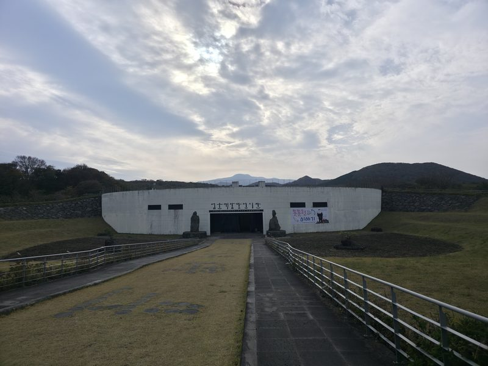
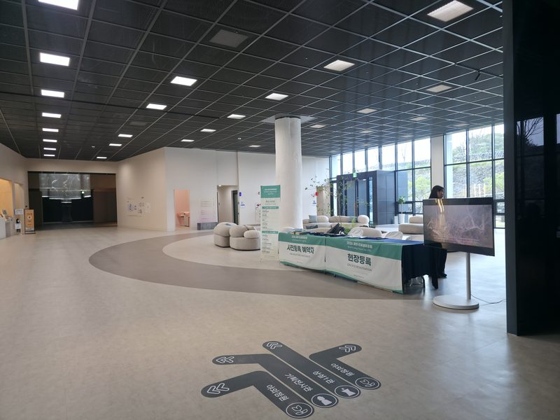
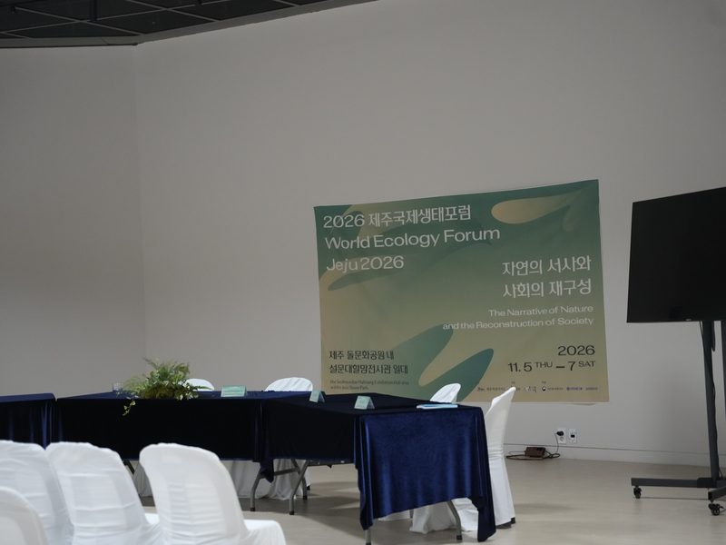
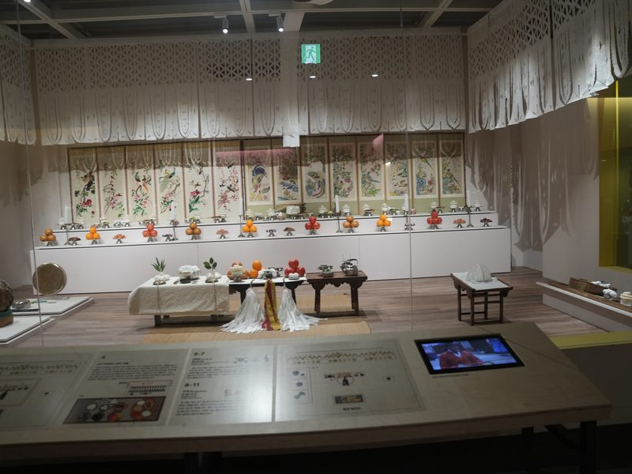
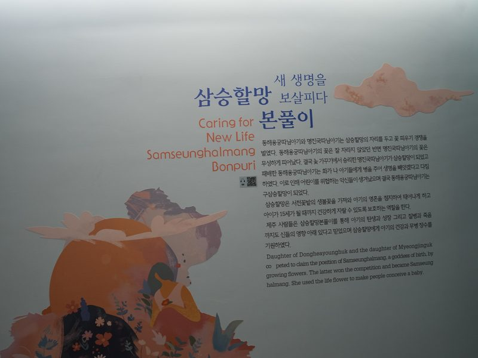
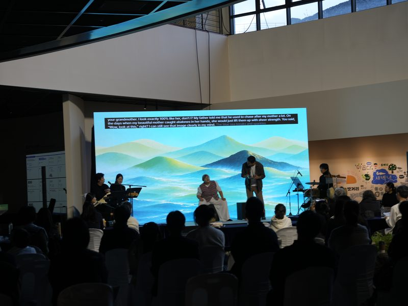
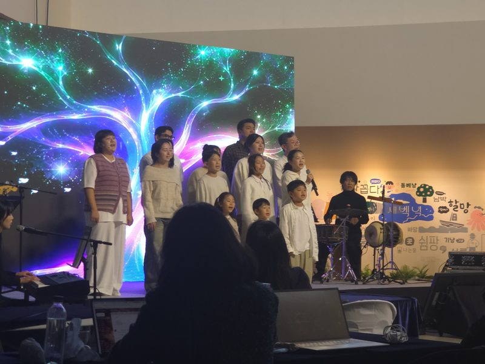
제주 전문가 네트워크 발표와 토론
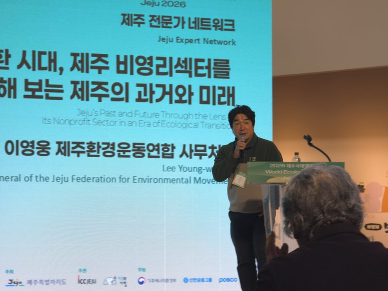
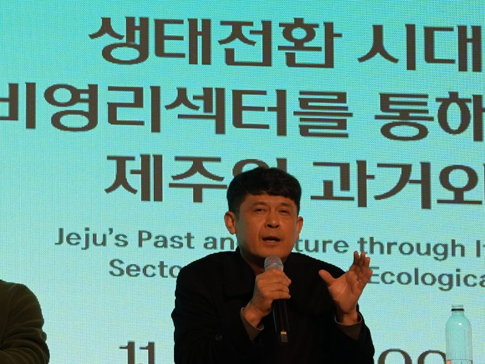
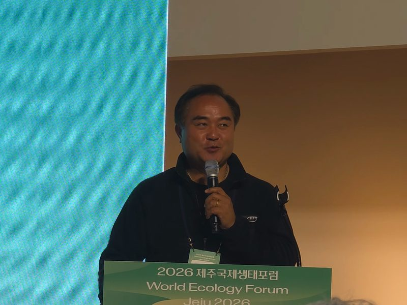
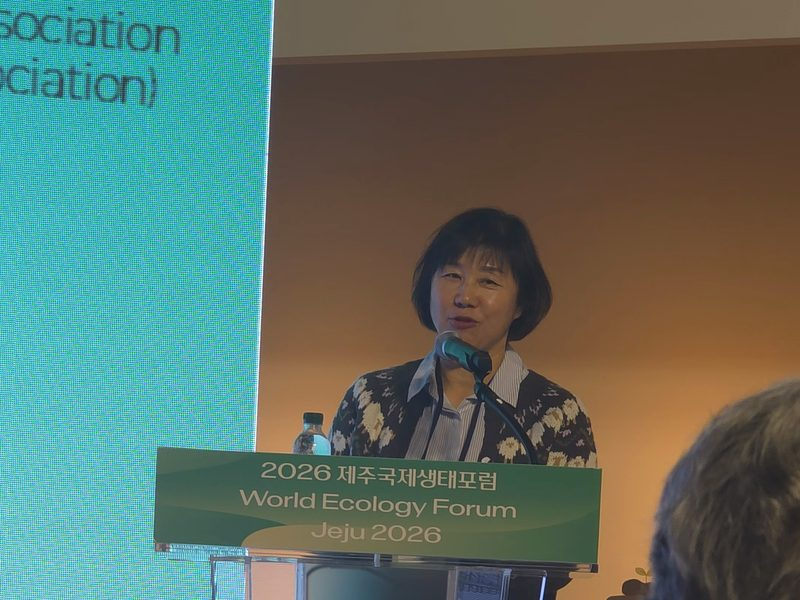
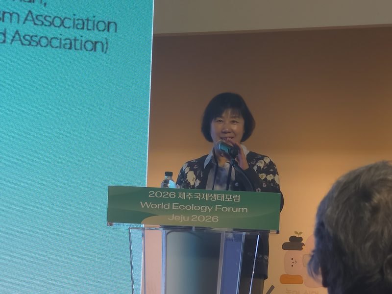
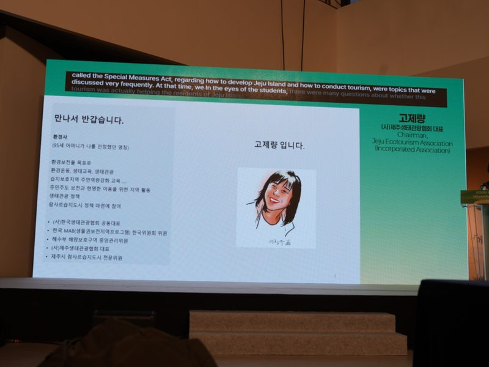
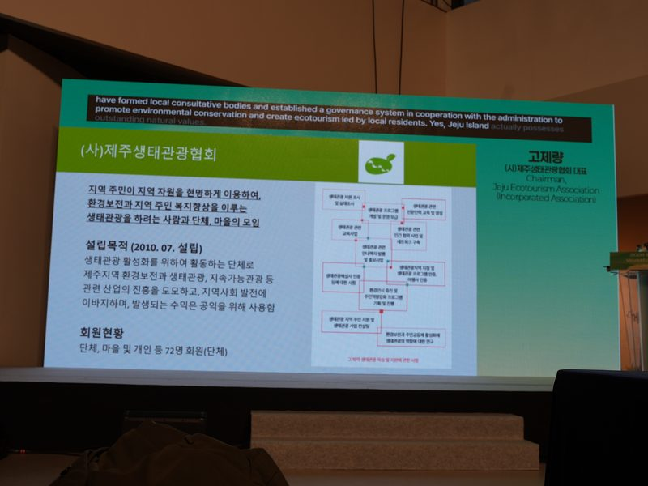
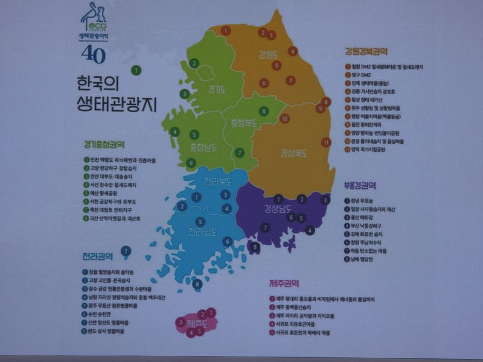
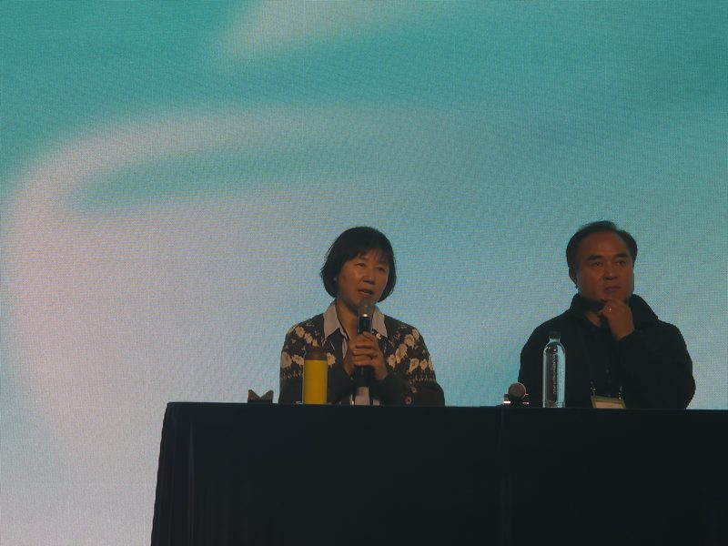
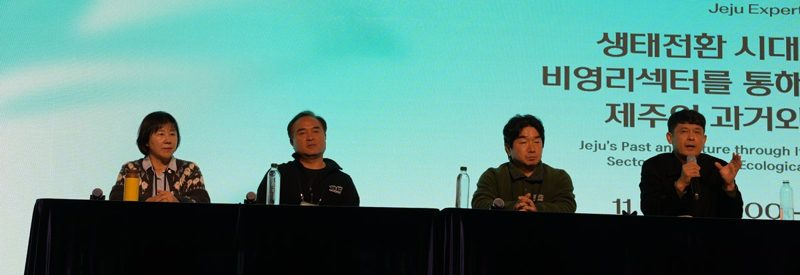
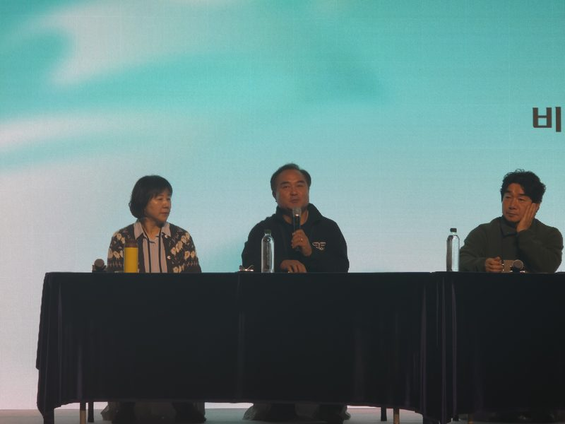
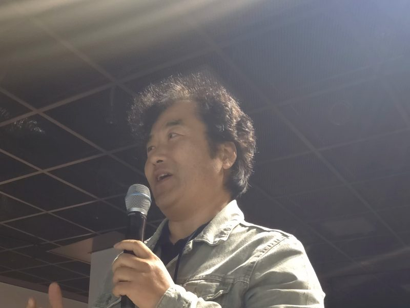
관련 기사와 공식 안내
- 제주 전문가 네트워크 — 생태전환 시대, 제주 비영리섹터를 통해 보는 제주의 과거와 미래2026 제주국제생태포럼 공식 누리집 · 세션 안내
- 포럼 일정2026 제주국제생태포럼 공식 누리집
- 기후위기 속 자연과 인간의 공존 논의…제주국제생태포럼 개막뉴스제주 · 2026. 11. 5.
- ‘자연의 서사와 사회의 재구성’ 2026 제주국제생태포럼 개막제주투데이
- 2026 제주국제생태포럼 첫 개최…기후위기 대응·생물다양성 보전 협력헤드라인제주
- 제1회 제주국제생태포럼, 11월 5~7일 개최제주의소리 · 2026. 10. 28.
- 자연에 법적 권리 부여 논의… 제주서 국제생태포럼 첫 개최파이낸셜뉴스 · 2026. 10. 28.
출처
- 사진: 현장 촬영 (일부는 현장 영상에서 뽑은 장면)
- 내용: 세션 현장 기록(발표·토론), 2026 제주국제생태포럼 공식 누리집 세션 안내·일정, 위 관련 기사